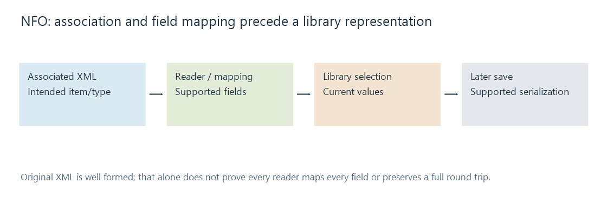

NFO metadata files
A media-library NFO is an associated metadata record, commonly XML, whose supported fields, item type and association determine what is imported or saved.
A media-library NFO stores information associated with an item outside its video or audio payload. Many such records use XML. The same extension can also occur on ordinary text-information files, so the suffix alone does not establish a usable metadata record.
The record needs the intended item
An original illustrative pair is:
The Station (2020).mkv
The Station (2020).nfo
Association depends on the applicable reader's naming/location rules. A well-formed movie record beside the wrong file can still import a wrong title and identity.
Emby's naming documentation provides the product context. Kodi's linked reference documents its own convention; its precedence rules should not automatically be attributed to Emby.
XML carries typed field meanings
Here is an original small movie record. The identifier value is invented for illustration, not supplied as a match to a real film:
<movie>
<title>The Station & the River</title>
<originaltitle>The Station</originaltitle>
<sorttitle>Station and the River</sorttitle>
<year>2020</year>
<uniqueid type="tmdb">424242</uniqueid>
<genre>Drama</genre>
<genre>Railway</genre>
</movie>
The XML escape preserves an ampersand in text. The named identifier retains a provider scope. Repeated genre elements express several values rather than one title-like string.
In the examined 21 July 2026 public Emby NFO parser, title/localtitle maps into the item name, originaltitle and sorttitle have separate destinations, and uniqueid uses its type attribute as a provider relationship. The source also has genre and actor handling.
This is evidence of that source revision's mappings. A complete input still needs the appropriate item reader and installed version.

Reading and saving are different operations
A reader imports supported values into the library. The current values can then reflect local data, providers and edits under precedence.
A saver serializes a supported representation later. A database edit does not inherently prove that a sidecar has already been updated, and editing the sidecar does not prove the library has reread it.
That distinction explains an old file value alongside a new displayed value without inventing a failed XML parser.
A round trip needs a preservation decision
An application can recognize some fields while ignoring others. Saving its model back out may reproduce only mapped fields, reorder lists or select one localized presentation.
Unsupported data can therefore disappear even when the resulting XML remains valid. A title/identifier preserved through a round trip does not establish preservation of every credit, language variant or playback-state field.
Keep the source record and its association available when comparing those operations. XML syntax, supported mapping and selected library values are three separate results.